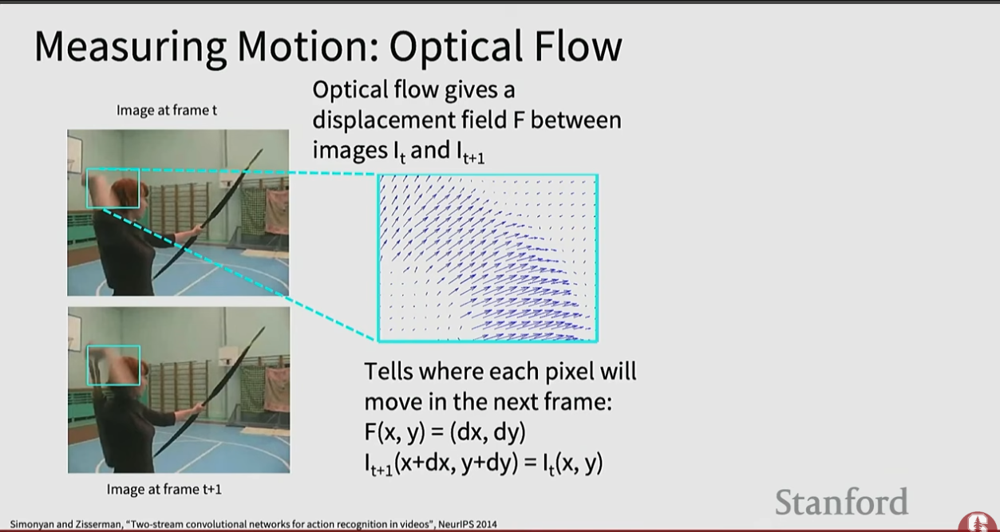
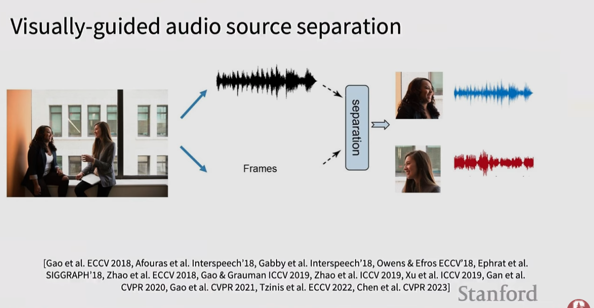

Extending computer vision from still images to sequences of frames. The key challenge is modeling both spatial appearance and temporal dynamics efficiently — video data is enormous compared to images.
Video = 2D images + time. Scale of uncompressed video (3 bytes/pixel):
| Resolution | Data per minute |
|---|---|
| SD (640×480) | ~1.5 GB/min |
| HD (1920×1080) | ~10 GB/min |
Practical solution: train on short clips at low fps and low spatial resolution (e.g., 3.2s at 5fps = 588 KB). In video classification, actions are classified rather than object categories (e.g., "swimming" vs "playing guitar").
Classify each frame independently using a 2D image CNN, then pick the most common prediction. No temporal modeling whatsoever — a simple baseline.
Process each frame independently, combine features at the end
T frames → [same 2D CNN per frame]
→ stack T feature maps
→ flatten → MLP → class scoresFuse time at the very first convolution
T × 3 × H × W
→ reshape to (3T) × H × W
→ standard 2D CNNTreat time as a first-class dimension alongside H and W
Kernel: (kT × kH × kW)
Input: 3 × T × H × W
(e.g., 3×16×224×224)Separate appearance and motion into two parallel CNNs
Spatial stream: RGB frames → 2D CNN
Temporal stream: optical flow → 2D CNN
Late fusion: combine both predictionsReuse pretrained 2D ImageNet weights in a 3D CNN by "inflating" 2D filters to 3D:
Paper: Quo Vadis, Action Recognition? (I3D)

| Method | Motion Modeling | Complexity | Notes |
|---|---|---|---|
| Late Fusion (FC) | None | High params | Simple baseline |
| Late Fusion (Pool) | None | Low | Efficient |
| Early Fusion | Weak (once) | Medium | Short motion only |
| 3D CNN | Strong | Very high | Best classical CNN |
| Two-Stream | Strong | Medium | Appearance + motion |
Self-attention naturally extends to video since it has no locality bias. Key papers:
To model temporal structure beyond what a single CNN clip can capture, use CNN feature extractors feeding into an RNN:
Frame₁ Frame₂ Frame₃ Frame₄ Frame₅
↓ ↓ ↓ ↓ ↓
CNN CNN CNN CNN CNN (2D or 3D, sometimes frozen)
↓ ↓ ↓ ↓ ↓
LSTM ←→ LSTM ←→ LSTM ←→ LSTM ←→ LSTM (bidirectional)
↓
Classification
Given a long untrimmed video, identify when (start/end timestamps) different actions occur. Paper: Rethinking the Faster R-CNN Architecture for Temporal Action Localization
Given a long untrimmed video, detect all people in both space (where) and time (when) and classify their activities. Example from the AVA dataset: simultaneously detect people clinking glasses ("drink"), reaching to grab objects, looking at phones, etc. Dataset: AVA: A Video Dataset of Spatio-temporally Localized Atomic Visual Actions
Video is multimodal — images come with audio. Tasks include:
| Dataset | Content | Scale |
|---|---|---|
| Sports-1M | Sports videos | 1M clips |
| UCF-101 | Human actions | 101 classes |
| Kinetics-400 | Human actions | 400 classes |
| AVA | Spatio-temporal actions | Dense annotation |